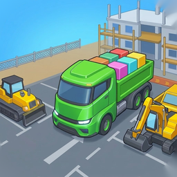

Truck Out: Build a City
Load trucks, raise houses
Support
Found a bug, stuck on a level or have an idea? Write to ruslankir317@gmail.com. Please mention your iPhone model, iOS version and the level number.
How to play
Tap a truck to drive it out of the yard along its arrow. It can leave only if nothing blocks the way. The truck parks on a free slot and waits for cargo of its color.
Cargo rides around the conveyor ring and drops into the waiting truck of the same color. A full truck drives to the site and the house grows. If every slot is taken and no truck can load, the level is lost.
An excavator or a bulldozer must reach the site before its move counter runs out. Dark trucks show their color once their way out is free. Crates marked “?” open as full trucks leave, or by themselves when you have no move left.
Boosters
VIP lifts any truck straight to the VIP slot. Forklift fills a parked truck. Undo takes back the last move. You earn boosters by finishing levels, and each level gives one free VIP, Forklift, extra undo and +5 moves when you run out.
Privacy
Truck Out does not collect any data. See the privacy policy.